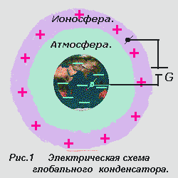
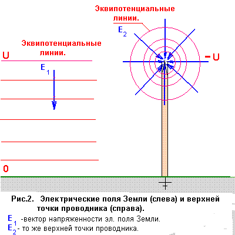
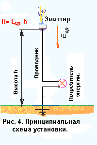
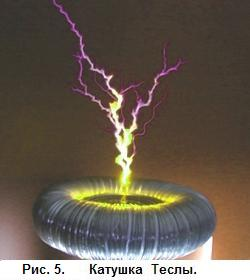
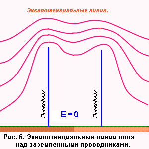

О получении энергии из электрического поля Земли

В природе существует уникальный альтернативный источник энергии, экологически чистый, возобновляемый, простой в использовании, который до сих пор нигде не используется. Источник этот - электрическое поле Земли.
Ниже излагается способ получения энергии из этого источника. Способ основан на свойствах электрического поля Земли и на базовых законах электростатики.
Атмосферное электричество
Наша планета в электрическом отношении представляет собой подобие
сферического конденсатора, заряженного примерно до 300 000 вольт.
Внутренняя сфера - поверхность Земли - заряжена отрицательно, внешняя
сфера - ионосфера - положительно. Изолятором служит атмосфера Земли. (
Рис.1 )
 |
Через атмосферу постоянно протекают ионные и конвективные токи утечки конденсатора, которые достигают многих тысяч ампер. Но несмотря на это разность потенциалов между обкладками конденсатора не уменьшается. А это значит, что в природе существует генератор (G), который постоянно восполняет утечку зарядов с обкладок конденсатора. Таким генератором является магнитное поле Земли, которое вращается вместе с нашей планетой в потоке солнечного ветра. Чтобы воспользоваться энергией этого генератора, нужно каким то образом подключит к нему потребитель энергии. Подлючиться к отрицательному полюсу - Земле - просто. Для этого достаточно сделать надежное заземление. Подключение к положительному полюсу генератора - ионосфере - является сложной технической задачей, решением которой мы и займемся. Как и в любом заряженном конденсаторе, в нашем глобальном конденсаторе существует электрическое поле. Напряженность этого поля распределяется очень неравномерно по высоте: она максимальна у поверхности Земли и составляет примерно 150 В/м. С высотой она уменьшается приблизительно по закону экспоненты и на высоте 10 км составляет около 3% от значения у поверхности Земли. |
Таким образом, почти всё электрическое поле сосредоточено в нижнем слое атмосферы, у поверхности Земли. Вектор напряженности эл. поля Земли E направлен в общем случае вниз. В своих рассуждениях мы будем использовать только вертикальную составляющую этого вектора. Электрическое поле Земли, как и любое электрическое поле, действует на заряды с определенной силой F, которая называется кулоновской силой. Если умножить величину заряда на напряженность эл. поля в этой точке, то получим как раз величину кулоновской силы Fкул.. Эта кулоновская сила толкает положительные заряды вниз, к земле, а отрицательные - вверх, в облака.
Электрическое поле Земли является потенциальным полем как и любое эл. поле. Каждой точке этого поля соответствует свой потенциал. Точки с одинаковым потенциалом образуют эквипотенциальные поверхности.
Проводник в электрическом полеУстановим на поверхности Земли вертикальный металлический проводник и заземлим его. Пусть верхняя точка проводника находится на на каком-то уровне U потенциала эл. поля Земли. Электрическое поле Земли в соответствии с законами электростатики начнет двигать электроны проводимости вверх, к верхней точке проводника, создавая там избыток отрицательных зарядов. Такое движение электронов будет продолжаться до тех пор, пока в верхней точе проводника не возникнет потенциал -U, равный по величине и противоположный по знаку потенциалу U эл. поля Земли, на котором расположена верхняя точка этого проводника.
Этот отрицательный потенциал -U полностью компенсирует положительный потенциал U эл.поля Земли и весь проводник, включая и его верхнюю точку, приобретает потенциал Земли, который мы принимаем за ноль.
Но избыток отрицательных зарядов в верхней точке проводника создаст свое электрическое поле.
Мы получили систему из двух эл. полей: эл. поля Земли E1 и эл. поля избыточных зарядов в верхней точке проводника E2.
 |
На рис. 2 изображены векторы напряженности этих полей. Векторы напряженности эл. поля Земли E1 вблизи проводника везде одинаковы по величинен и направлению. Векторы же напряженности эл. поля проводника в разных точках поля имеют разную величину и направление. На рис. 2 справа изображены векторы напряженности E2 этого эл. поля. Они сходятся в верхней точке проводника, где сосредоточены избыточные электроны проводимости. Согласно принципу суперпозиции эл. полей напряженность результирующего эл. поля равна геометрической сумме напряженностей каждого из этих полей. Обратите внимание: ниже верхней точки проводника векторы напряженности E1 и E2 этих двух полей направлены в противоположных направлениях. Здесь они компенсируют друг друга и в проводнике эл. поле равно нулю. Выше верхней точки проводника
векторы напряженности этих двух полей
направлены в одном направлении - вниз. Здесь
они складываются и дают суммарную
напряженность эл. поля. |
На рис.3 изображено суммарное эл. поле в сечении вертикальной плоскостью, проходящей через проводник. Примечательно, что потенциал проводника во всех его точках равен нулю и в то же время на верхней точке проводника сконцентрирована большая напряженность суммарного эл. поля Земли и проводника.
Именно это эл. поле и стремится вырвать электроны проводимости из верхней точки проводника. Но у электронов недостаточно энергии для того, чтобы покинуть проводник. Эта энергия называется работой выхода электрона из проводника и для большинства металлов она составляет менее 5 электронвольт - величина весьма незначительная. Но электрон в металле не может приобрести такую энергию между столкновениями с кристаллической решеткой металла и поэтому остается на поверхности проводника. Возникает вопрос: что произойдет с проводником, если мы поможем избыточным зарядам на верхушке проводника покинуть этот проводник ? Ответ простой: отрицательный заряд на верхушке проводника уменьшится, внешнее электрическое поле внутри проводника уже не будет скомпенсировано и снова начнет двигать электроны проводимости вверх к верхнему концу проводника. Значит, по нему потечет ток. И если нам удастся постоянно удалять избыточные заряды с верхней точки проводника, в нем постоянно будет течь ток. Теперь нам достаточно разрезать проводник в любом, удобном месте и включить туда нагрузку ( потребитель энергии ) - и электростанция | |
 |
На рис.4 показана
принципиальная схема такой установки. Таким образом, мы замкнули электрическую цепь между обкладками глобального электрического конденсатора, который в свою очередь подключен к генератору G, и включили в эту цепь потребитель энергии ( нагрузку ). Остается решить один важный вопрос: каким образом удалять избыточные заряды с верхней точки проводника? |
Для этого нужно устройство, которое бы помогало электронам проводимости покинуть проводник - излучатель электронов или эмиттер.
Эмиттер может быть построен на базе высоковольтного генератора небольшой мощности, который способен создать коронный разряд вокруг излучающего электрода на верхушке проводника.
Такие высоковольтные генераторы используются в промышленности в дымоулавливателях, ионизаторах воздуха, установках для электростатической окраски металлов и различных бытовых приборах.
Генератор создает вокруг излучателя электронов проводимости искровой, коронный или кистевой разряд. Такой разряд является проводящим плазменным каналом, по которому электроны проводимости свободно стекают в атмосферу уже под действием эл.поля Земли.
Анимацию и описание такого разряда смотрите
Для этой же цели можно использовать трансформатор или катушку Теслы.
В 1891 году Никола Тесла создал свой знаменитый высокочастотный высоковольтный трансформатор, который он использовал для экспериментов и демонстрации своих опытов.
 |
Сейчас это устройство называют катушкой Теслы (Tesla coil). В промышленности это изобретение не нашло применения. Оно используется главным образом для всякого рода аттракционов. Во время работы катушки в ее вторичной обмотке создается напряжение в несколько миллионов вольт, которое ионизирует воздух и создает различные электрические разряды - стримерные, искровые или коронный разряд в зависимости от входного напряжения. Каналы этих разрядов в ионизированном воздухе являюся хорошим проводником для электронов проводимости, которые стремятся вырваться из металла проводника в атмосферу. И электроны проводимости по каналам разрядов легко покидают проводник и уходят в атмосферу уже под действием эл. поля Земли, которое концентрируется на верхней точке проводника. Форму и интенсивность разряда катушки можно в определенных пределах регулировать от слабого коронного до мощного дугового в зависимости от интенсивности эл. поля Земли и необходимой мощности установки. |
Пусть верхняя точка проводника
находится на высоте 100 м., средняя
напряженность эл. поля по высоте проводника
Еср. = 100 В/м.
Тогда разность потенциалов эл. поля между
Землей и верхней точкой проводника будет
численно равна:
Точно такой же величины будет и отрицательный компенсирующий потенциал в верхней точке проводника. Это - совершенно реальная разность потенциалов между землей и верхней точкой проводника, которую можно измерить. Правда, обычным вольтметром с проводами измерить ее не удастся - в проводах возникнет точно такая же э.д.с., как и в проводнике, и вольтметр покажет 0.
Сила тока в проводнике зависит в основном от эффективности работы эмиттера. Если с помощью эмиттера мы сможем получить ток 10 А., то полная мощность установки составит 100 кВт.
При работе эмиттера освободившиеся электроны скапливаются в атмосфере над эмиттером и создают отрицательно заряженное облако. Эл. поле этого облака направлено против эл. поля Земли и уменьшает его. При наличии ветра облако сносится ветром и его влияние будет незначительным. В отсутствии ветра это облако удаляется только кулоновскими силами эл. поля над эмиттером, образуя конвективную струю, направленную вверх. В этом случае сила тока установки будет ограничиваться силой тока конвективной струи.
Особенности электрического поляЭл. поле над земной поверхностью обладает такими особенностями, которые обязательно нужно учитывать.
Над ровной подстилающей поверхностью такой, как море или широкая равнина, эквипотенциальные поверхности поля расположены примерно параллельно друг другу, как показано на рис. 2 слева.
Но как только в нем появляется заземленный проводник, это поле меняется и становится примерно таким, как показано на рис. 3.
 |
Эффект получается таким, как будто это поле поднялось и повисло на верхушке этого проводника. Эквипотенциальные линии над проводником сконценторировались, а значит увеличился вектор напряженности эл. поля. В то же время у основания проводника эл. поле уменьшилось. Если два заземленных проводника расположены недалеко друг от друга, то эл. поле будет выглядеть примерно так, как показано на рис. 6. Все эл. поле располагается выше
заземленных проводников. Между этими
проводниками у земной поверхности эл.
поле близко к нулю. Следовательно, в условиях города проводник с эмиттером необходимо поднять выше крыш городских домов и всякого рода антенн, флагштоков, деревьев и шпилей, расположенных поблизости. Еще надежней поднять проводник и эмиттер на аэростате. |
Такая установка отбирает мощность у глобального генератора.
В связи с этим возникает один очень важный вопрос - как отразится повсеместное широкое использование таких установок на электрическом поле Земли?
Не приведет ли это к ослаблению эл. поля Земли?
У нас нет возможности замерить мощность этого генератора. Но по некоторым косвенным признакам можно судить о его мощности.
На Земле постоянно бушуют несколько
ураганов, тропических штормов и множество
циклонов. По современным представлениям и
оценкам примерно треть мощности урагана
приходится на его электрическую
составляющую.
Что же это такое - электрическая
составляющая мощности урагана?
Мощность урагана пропорциональна объему и скорости подъема теплого воздуха в его тепловой башне - центральной области урагана.
Такой подъем воздуха проискодит в основном за счет разности плотности воздуха на периферии урагана и в его центре - тепловой башне, но не только. Часть подъемной силы (примерно одну треть.) обеспечивает электрическое поле Земли.
Все дело в том, что испаряющаяся с поверхности штормового океана вода уносит с собой огромное количесво отрицательных зарядов.
С точки зрения электростатики штормовой океан представляет собой огромное поле, усыпанное остриями и ребрами, на которых концентрируются отрицательные заряды и напряженность эл. поля Земли. Это - электростатический эффект острия.
Испаряющиеся молекулы воды в таких условиях легко захватывают отрицательные заряды и уносят их с собой. А электрическое поле Земли в полном соответствии с законом Кулона двигает эти заряды вверх, добавляя воздуху подъемную силу.
И эта добавка составляет около трети полной подъемной силы, а значит и мощности урагана. Таким образом глобальный электрический генератор расходует часть своей мощности на усиление атмосферных вихрей на планете - ураганов, штормов, циклонов и пр.
Но такой расход мощности никак не
сказывается на величине электрического
поля Земли.
Если учесть, что мощность среднего урагана
превышает мощность всех электростанций
мира, то можно заключить, что широкое и
повсеместное использование этой энергии
никак не скажется на электрических
параметрах нашей планеты.
В результате наших действий мы подключили потребитель энергии к глобальному генератору электрической энергии. К отрицательному полюсу - Земле - мы подключились с помощью обычного металлического проводника (заземления), а к положительному полюсу - ионосфере - с помощью весьма специфического проводника - конвективного тока.
Конвективные токи - это электрические токи, обусловленные упорядоченным переносом заряженных частиц. В природе они встречаются часто. Самые мощные из них - это ураганы и восходящие потоки воздуха во внутритропической зоне конвергенции, которые уносят огромное количество отрицательных зарядов в верхние слои тропосферы.
Из вышесказанного можно
сделать следующие выводы:
Источник энергии является простым и удобным в использовании.
На выходе получаем самый удобный вид энергии - электроэнергию.
Источник экологически чист: никаких выбросов, никакого шума и т.п.
Установка проста в изготовлении и эксплуатации.
Исключительная дешевизна получаемой энергии и еще масса других достоинств.
Электрическое поле Земли
подвержено колебаниям: зимой оно сильнее,
чем летом, ежедневно оно достигает
максимума в 19 часов по Гринвичу, также
зависит от состояния погоды. Но эти
колебания не превышают 30% от его среднего
значения.
В некоторых редких случаях при
определенных погодных условиях
напряженность этого поля может
увеличиться в несколько раз.
Во время грозы эл.поле изменяется в больших пределах и может изменить направление на противоположное, но это происходит на небольшой площади непосредственно под грозовой ячейкой и в течение короткого времени.